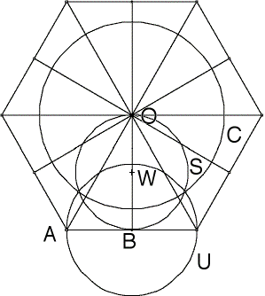

Step 2
| Find the midpoint W of the segment OB from O, the center of the hexagon, to B, the midppoint of one of the sides. |
| Draw the circle S with center W and passing through O. |
| Draw the circle U with center B and with diameter the side of the hexagon. |
| Draw the circle C with center O and passing through the intersections of the circles S and U. |
| This circle C is the boundary of the Poincare disc. |
|  |
| Three features of this construction are important to note. |
| * From a previous construction, the circles C and U are orthogonal. |
| * The cirlce U and segment OB are orthogonal. |
| The circle U intersects segment AO at 30 degrees. This requires some effort. |
| We have constructed the hyperbolic triangle with angles 30, 30, and 90. |
Return to construction.